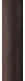

A sample of ProgressBars.
50% |
|
|
Value: |
The input element lets you change the values of both bars at once. None of these ProgressBars use the standard SAM skin that comes with the YUI library. Since the rest of the page does use that skin, the first thing is to cancel out those:
The containers for the two ProgressBars have ids pbcopper and pbr so we use them to
specifically cancel the built-in styles for them. Of course if the page had not used the yui-skin-sam
className, this would not have been needed at all, but then other YUI controls would have been deprived of their skinning.
The bar on the left, with a certain Victorian-era look, was created with this code:
It has been set to grow from bottom to top with the direction attribute,
with animation enabled and an initial value. The parameters for the animation have been set
in the next two lines and finally the ProgressBar was rendered into its container, pbcopper.
The style of the bar is due to the following declarations:
We are using three images to style this ProgressBar, the image in the first declaration provides the silvery concave background of the bar, the second the copper faceplate, which includes a transparent window to let the bar show through and the last one, the brown bar. The three images are here:
| copperbackV.gif | coppermaskV.gif | copperbarV.gif |
|---|---|---|
|  |
margin: 32px 0 to
prevent the bar to go under.
This ProgressBar at the top uses a mask that is not symmetrical in any way. It cannot be stretched or cropped. The bar, which looks like a wedge, is actually rectangular as it always is. The mask has a wedge-shaped transparent area in the bottom-right corner, with an opaque area in the top-left of the same color as the page background. It also has the tick marks which reach into the transparent area. The bar is a single image with a color gradient, the bar shows whatever needs of it. Here you have them both over a golden background with blue borders around the two images, the wedge-shaped window can be clear seen letting the golden background show through:
This images are assigned through the following CSS style declarations:
The bar itself was created with the following code:
The ProgressBar has been assigned a template to be voiced by WAI-ARIA readers and has animation enabled. It has been further suplemented with the current value. We have used CSS positioning to get the caption overlaid on the area not occupied by the wedge. To keep it updated, we use the following code: